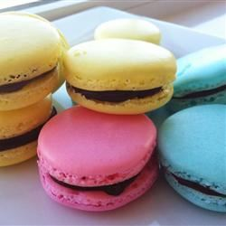

Description:
Fantabulous colored, bite-sized macaroons. Divide batter into thirds and color one-third pink and flavor with raspberry flavoring; color one-third yellow and flavor with lemon flavoring; color one-third pale blue and flavor with vanilla. Fill and make sandwich cookies with filling of choice, like peach jam or strawberry preserves.
Ingredients:
- 3 egg whites
- 6 tablespoons superfine (castor) sugar
- 1 cup finely ground almonds
- 1 ½ teaspoons finely ground almonds
- 1 ⅓ cups confectioners' sugar
Steps:
- Preheat oven to 320 degrees F (160 degrees C). Line baking sheets with parchment paper or a silicon mat.
- Whisk egg whites in a clean metal mixing bowl until thick, about 5 minutes; whisk the superfine sugar into the egg whites until thick, glossy, and the mixture holds stiff peaks, 5 to 8 more minutes. Place a sieve over the bowl containing egg whites and sieve both amounts of almond meal and confectioners' sugar into the egg white mixture. Gently fold the almond meal and confectioners' sugar into the egg whites, retaining as much air as possible.
- Separate the meringue into separate bowls to flavor and color, if desired. Spoon the meringue into a piping bag fitted with a 3/8-inch tip. Pipe 1-inch disks of meringue onto the prepared baking sheets, leaving about 2 inches between cookies.
- Let the cookies stand at room temperature for about 15 minutes to form a thin skin. Pick up the baking sheets and let drop from several inches above the work surface to adhere cookies to the baking sheets.
- Bake in the preheated oven until tops are dry, about 15 minutes; let cool completely on the baking sheets before peeling off the parchment paper.
Return to top
Back to main page